Södermalm i tid och rum. Stockholm
Skeppargränd

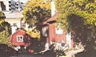
 Skeppargränd 1 från söder.
Skeppargränd 1 från söder.
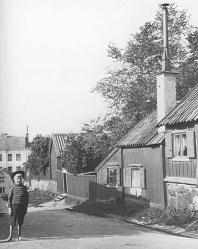
 Skeppargränd 3, 1 från söder omkr 1900.
Skeppargränd 3, 1 från söder omkr 1900.
Skeppargränd 5
Åsögatan 195

 Skeppargränd 5 vid hörnet av Åsögatan.
Skeppargränd 5 vid hörnet av Åsögatan.


|
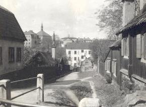 Skeppargränd norrut från Åsögatan. Närmast till höger Skeppargränd 5. Närmast till vänster nr 6 och sedan nr 4.
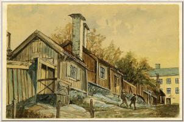 Skeppargränd 1, 3, 5 norrifrån. Akvarell av Olof Martin Andersson 1900-1910. |
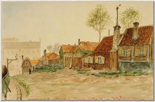 Akvarell av Fritz Ahlgrensson 1901.
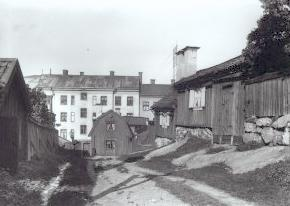 Till höger Skeppargränd 5, 3, 1. Till vänster nr 4. Trähuset i bakgrunden är Lotsgatan 3. Året är 1897. |
|
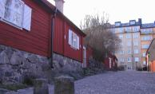  2004. Skeppargränd söderut från Lotsgatan. 2004. Skeppargränd söderut från Lotsgatan.
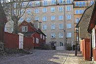  2004 2004
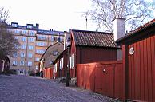  2004. Skeppargränd söderut från Lotsgatan. 2004. Skeppargränd söderut från Lotsgatan.
|
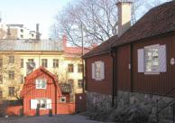  2004 2004
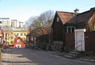  2004 2004
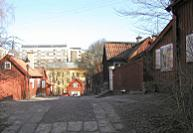  2004 2004
|
Skeppargränd 8 Tomten uppläts 1698. De två panelade timmerstugorna tillkom före 1759. Stenhuset byggdes 1770.
|